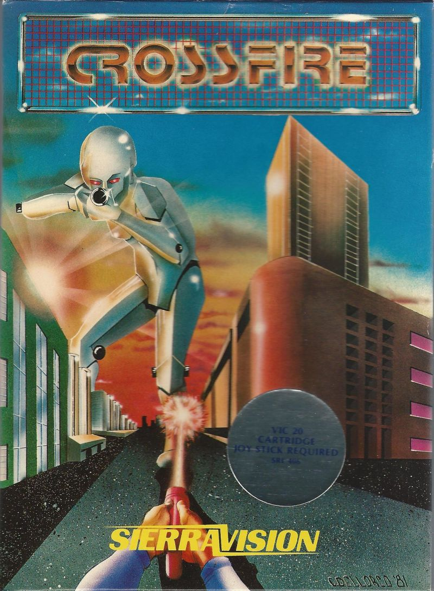

Impact
Despite being described as very difficult in Softline, the game is also touted as “a new twist at arcade games with delightfully colorful beasties and smooth animation”. However, the game was not rated in Softalk in January or February of 1982.

Production History
Crossfire was released in 1981. It was created by Jay Sullivan and published by On-line Systems (now and more commonly known as Sierra On-line). Softline stated that Jay Sullivan provided a game that offered hours of challenge and enjoyment.